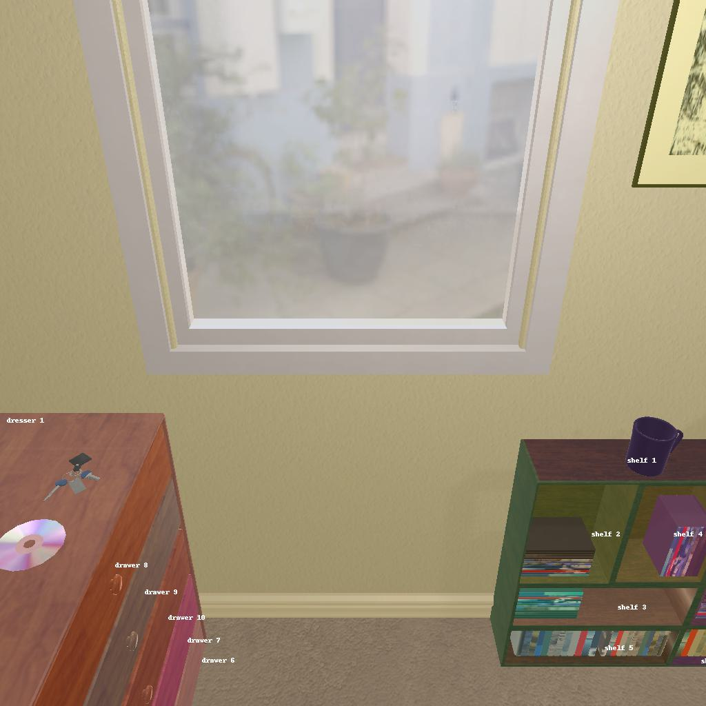

---------------------------------------------------------task: 1---------------------------------------------------------
--------------------------------------------------------------------------------------------------------------------------------------------------------------------
--------------------------------------------------------------------------------------------------------------------------------------------------------------------
Step:--------------------------------------------------------------------------0-------------------------------------------------------------------------------
----------------------------------------
VLM Prompt:
Image1:
**Instruction**
1. Analyze the provided image to identify all visible household objects, focusing on those relevant to the task description "examine the alarmclock with the desklamp."
2. Use the analysis of the image and the task hint "The agent must find an object of the desired type, locate and turn on a light source with the desired object in-hand." to answer the question: what is the most reasonable action in the choices for the task description "examine the alarmclock with the desklamp"?
4. Decide and write the answer using the template: The answer is: (i): , where i is the real number. If there is no desired object in the image, search every place based on **Initial Observation** to find the object. And if no one is exactly correct, choose a similar answer.
**Initial Observation**
You are in the middle of a room. Looking quickly around you, you can see bed (1), dresser (1), drawer (1-10), garbagecan (1), shelf (1-7)
**Answer Choices**
(1): go to bed 1
(2): go to dresser 1
(3): go to drawer 1
(4): go to drawer 2
(5): go to drawer 3
(6): go to drawer 4
(7): go to drawer 5
(8): go to garbagecan 1
(9): go to drawer 6
(10): go to drawer 7
(11): go to drawer 8
(12): go to drawer 9
(13): go to drawer 10
(14): go to shelf 1
(15): go to shelf 2
(16): go to shelf 3
(17): go to shelf 4
(18): go to shelf 5
(19): go to shelf 6
(20): go to shelf 7
**Answer**
Let's think step by step by following the instructions.
----------------------------------------
----------------------------------------
Original Response:
Firstly, we need to identify all visible household objects relevant to the task description "examine the alarmclock with the desklamp." In the image provided, we can see a dresser and a shelf with various items. However, there is no alarm clock or desk lamp visible in the image.
Given the task hint that "The agent must find an object of the desired type, locate and turn on a light source with the desired object in-hand," we need to search for the alarm clock and the desk lamp. Since the image does not show these objects, we must search every place based on the **Initial Observation**.
Considering the usual places where one might find an alarm clock and a desk lamp, it is likely that they would be on a dresser or a shelf. Since the dresser in the image does not have an alarm clock or desk lamp on it, the next reasonable action would be to check the shelves.
The answer is: (15): go to shelf 2.
----------------------------------------
----------------------------------------
>>> Refine Original VLM Response and Get Pure Action: go to shelf 2
----------------------------------------
-----------------------------------------------------------------
Running time: 14.846118927001953 seconds
Total Money: 0.28503
-----------------------------------------------------------------
-----------------------------------------------------------------
Text Observation:You arrive at loc 14. On the shelf 2, you see a cd 1, a mug 1, and a keychain 1.
-----------------------------------------------------------------
UNSUCCEED